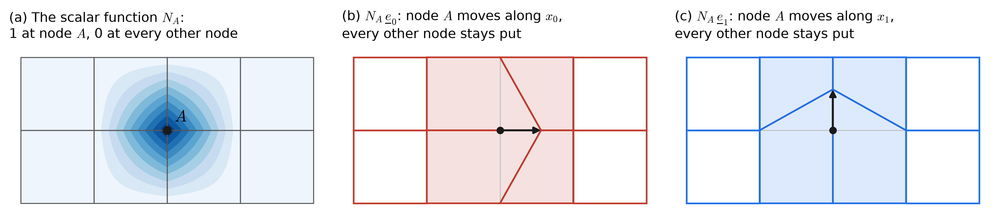
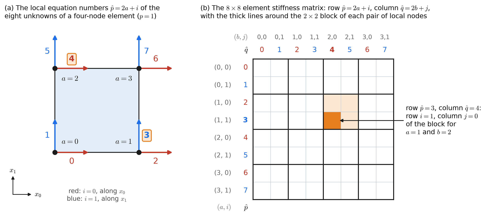

28 Class 28: The Galerkin Form of Elasticity and Assembly
Vector basis functions, the ID and IEN arrays with two unknowns at each node, and local and global assembly
In Class 27, the weak form of elasticity was written with vectors and matrices:
\[ \int_\Omega \underline{\epsilon}(\underline{w})^T\,\underline{\underline{D}}\;\underline{\epsilon}(\underline{u})\;d\Omega = \int_\Omega w_i\,f_i\;d\Omega + \sum_{i=0}^{n_{sd}-1}\left(\int_{\Gamma_{h_i}} w_i\,h_i\;d\Gamma\right) . \]
As in Classes 26 and 27, every index is numbered from 0: the coordinates are \(x_0\) and \(x_1\), and \(u_0\) is the displacement along \(x_0\).
In this class, we follow the steps of Class 7 to turn it into a matrix equation, \(\underline{\underline{K}}\,\underline{d} = \underline{F}\). The steps are the same as for the Poisson Equation. What is new is that for 2D elasticity each node now has two unknowns, one for each direction, and the ID array, the element arrays, and assembly must keep track of both of them.
28.1 The Galerkin form
To shorten the notation, let
\[ \begin{aligned} a(\underline{w}, \underline{u}) &= \int_\Omega \underline{\epsilon}(\underline{w})^T\,\underline{\underline{D}}\;\underline{\epsilon}(\underline{u})\;d\Omega, \\ (\underline{w}, \underline{f}) &= \int_\Omega w_i\,f_i\;d\Omega, \qquad (\underline{w}, \underline{h})_\Gamma = \sum_{i=0}^{n_{sd}-1}\int_{\Gamma_{h_i}} w_i\,h_i\;d\Gamma . \end{aligned} \]
As for the Poisson Equation, the trial solution is split into an unknown part \(\underline{v}^h\), which is zero on the Dirichlet boundary, and a known part \(\underline{g}^h\), which takes the prescribed values there, so that \(\underline{u}^h = \underline{v}^h + \underline{g}^h\). Each component is treated separately: \(v^h_i = 0\) and \(g^h_i = g_i\) on \(\Gamma_{g_i}\), and every weighting function has \(w^h_i = 0\) on \(\Gamma_{g_i}\). The Galerkin form is then
\[ (\mathrm{G})\qquad \begin{aligned} &\text{Given } \underline{f},\; \underline{g},\; \underline{h}, \text{ and } \underline{\underline{D}}, \text{ find } \underline{u}^h = \underline{v}^h + \underline{g}^h, \text{ with } \underline{v}^h \in \mathcal{V}^h, \\ &\text{such that for all } \underline{w}^h \in \mathcal{V}^h, \\[2pt] &\qquad a(\underline{w}^h, \underline{v}^h) = (\underline{w}^h, \underline{f}) + (\underline{w}^h, \underline{h})_\Gamma - a(\underline{w}^h, \underline{g}^h) . \end{aligned} \]
The last term contains only known quantities, so it belongs on the right-hand side, as it did for the Poisson Equation.
28.2 Vector basis functions
Each component of the displacement is built from the same scalar basis functions \(N_A\) that were used for the Poisson Equation. The index \(i\) of a component is called its degree of freedom: \(i = 0\) is the component along \(x_0\), and \(i = 1\) is the component along \(x_1\). Let \(\eta_{g_i}\) be the set of nodes on \(\Gamma_{g_i}\), at which degree of freedom \(i\) is prescribed. Then, for \(i = 0\) and \(1\),
\[ v^h_i = \sum_{A \notin \eta_{g_i}} N_A\,d_{iA}, \qquad g^h_i = \sum_{A \in \eta_{g_i}} N_A\,g_{iA} . \]
Here \(d_{iA}\) is the unknown displacement of node \(A\) along degree of freedom \(i\), and \(g_{iA}\) is a prescribed one. Since the boundary is divided separately for each direction, the sums for the two degrees of freedom can run over different sets of nodes.
The two components combine into a vector:
\[ \underline{v}^h = \sum_{i=0}^{1} v^h_i\,\underline{e}_i = v^h_0 \begin{bmatrix} 1 \\ 0 \end{bmatrix} + v^h_1 \begin{bmatrix} 0 \\ 1 \end{bmatrix} = \sum_{i=0}^{1}\;\sum_{A \notin \eta_{g_i}} d_{iA}\,N_A\,\underline{e}_i , \]
where \(\underline{e}_0\) and \(\underline{e}_1\) are the unit vectors along \(x_0\) and \(x_1\). Each product \(N_A\,\underline{e}_i\) is a vector basis function: the displacement field in which node \(A\) moves one unit along degree of freedom \(i\) and every other node stays in place (Figure 28.1). As a result, each node has two unknowns, \(d_{0A}\) and \(d_{1A}\), and two vector basis functions. A roller support prescribes one of them and leaves the other unknown.

28.3 The matrix equation
The weighting function is expanded in the same way, \(\underline{w}^h = \sum_{i=0}^{1}\sum_{A \notin \eta_{g_i}} c_{iA}\,N_A\,\underline{e}_i\). Substituting the expansions into (G), and using the fact that the coefficients \(c_{iA}\) are arbitrary, gives one equation for each unknown, similar to what was done in Class 7. The equation for node \(A\) and degree of freedom \(i\) is
\[ \begin{aligned} \sum_{j=0}^{1}\;\sum_{B \notin \eta_{g_j}} a\!\left(N_A\,\underline{e}_i,\; N_B\,\underline{e}_j\right) d_{jB} = \;& \left(N_A\,\underline{e}_i,\; \underline{f}\right) + \left(N_A\,\underline{e}_i,\; \underline{h}\right)_\Gamma \\ & - \sum_{j=0}^{1}\;\sum_{B \in \eta_{g_j}} a\!\left(N_A\,\underline{e}_i,\; N_B\,\underline{e}_j\right) g_{jB} . \end{aligned} \]
It is the balance of forces at node \(A\) along degree of freedom \(i\), since the virtual displacement \(N_A\,\underline{e}_i\) moves only that node, and only in that direction.
To evaluate \(a(N_A\,\underline{e}_i, N_B\,\underline{e}_j)\), we need the strain vector of a vector basis function. From Class 27, \(\underline{\epsilon}(\underline{u}) = \left(u_{0,0},\; u_{1,1},\; u_{0,1} + u_{1,0}\right)^T\), so
\[ \underline{\epsilon}(N_B\,\underline{e}_0) = \begin{bmatrix} N_{B,0} \\ 0 \\ N_{B,1} \end{bmatrix}, \qquad \underline{\epsilon}(N_B\,\underline{e}_1) = \begin{bmatrix} 0 \\ N_{B,1} \\ N_{B,0} \end{bmatrix} , \]
where \(N_{B,0}\) and \(N_{B,1}\) are the derivatives of \(N_B\) with respect to \(x_0\) and \(x_1\). You should spend a moment convincing yourself about how to get these vectors before you move on. These are the two columns of the matrix
\[ \underline{\underline{B}}_B = \begin{bmatrix} N_{B,0} & 0 \\ 0 & N_{B,1} \\ N_{B,1} & N_{B,0} \end{bmatrix} , \]
which is called the strain-displacement matrix, or B matrix, of node \(B\). If node \(B\) moves by \(d_{0B}\) and \(d_{1B}\), the strain it causes is \(\underline{\underline{B}}_B\) multiplied by \((d_{0B}, d_{1B})^T\). Therefore
\[ a\!\left(N_A\,\underline{e}_i,\; N_B\,\underline{e}_j\right) = \underline{e}_i^T \left( \int_\Omega \underline{\underline{B}}_A^T\,\underline{\underline{D}}\;\underline{\underline{B}}_B\;d\Omega \right) \underline{e}_j , \]
which is the entry in row \(i\) and column \(j\) of a \(2 \times 2\) matrix for the pair of nodes \(A\) and \(B\), with the rows and columns numbered from 0.
Numbering the unknowns with equation numbers, the equations become
\[ \begin{aligned} &K_{PQ}\,d_Q = F_P, \qquad K_{PQ} = a\!\left(N_A\,\underline{e}_i,\; N_B\,\underline{e}_j\right), \\ &F_P = \left(N_A\,\underline{e}_i,\; \underline{f}\right) + \left(N_A\,\underline{e}_i,\; \underline{h}\right)_\Gamma - \sum_{j=0}^{1}\;\sum_{B \in \eta_{g_j}} a\!\left(N_A\,\underline{e}_i,\; N_B\,\underline{e}_j\right) g_{jB} , \end{aligned} \]
where \(P\) is the equation number of degree of freedom \(i\) of node \(A\), and \(Q\) is that of degree of freedom \(j\) of node \(B\). In matrix form,
\[ \boxed{\underline{\underline{K}}\,\underline{d} = \underline{F}} \]
Each pair of nodes that share an element contributes a \(2 \times 2\) block to \(\underline{\underline{K}}\). The diagonal entries of the block relate displacements in the same direction, and the off-diagonal entries relate the two directions, through the Poisson effect and through shear.
28.4 The ID array
In Class 14, the ID array gave one equation number for each node. In elasticity, each node has one equation number for each direction:
\[ \mathrm{ID}(i, A) = \begin{cases} P, & \text{if degree of freedom } i \text{ of node } A \text{ is unknown} \\ -1, & \text{if it is prescribed} \end{cases} \]
where \(P\) is its equation number.
Here \(i\) is the degree of freedom, 0 for the displacement along \(x_0\) and 1 for the displacement along \(x_1\), and \(A\) is the global basis function number. As in Class 14, the equations are numbered consecutively from 0, skipping the prescribed components. They are often numbered node by node, with both degrees of freedom of node 0, then both degrees of freedom of node 1, and so on. This keeps the two unknowns of a node next to each other, so that each \(2 \times 2\) block of \(\underline{\underline{K}}\) stays together. A node on a roller support has one equation number and one \(-1\).
The IEN array is unchanged. It relates the local and global numbers of the basis functions, which do not depend on the direction. Composing the two arrays gives the equation number of each local unknown,
\[ \mathrm{LM}(i, a, e) = \mathrm{ID}\big(i,\; \mathrm{IEN}(a, e)\big) . \]
28.5 The element stiffness matrix
As for the Poisson Equation, the integral over \(\Omega\) is the sum of the integrals over the elements. On element \(e\), the \(2 \times 2\) block for local nodes \(a\) and \(b\) is
\[ \begin{aligned} \underline{\underline{k}}^e_{ab} &= \int_{\Omega^e} \underline{\underline{B}}_a^T\,\underline{\underline{D}}\;\underline{\underline{B}}_b\;d\Omega \\ &= \int_{\Omega^e} \begin{bmatrix} N_{a,0} & 0 \\ 0 & N_{a,1} \\ N_{a,1} & N_{a,0} \end{bmatrix}^T \begin{bmatrix} \lambda + 2\mu & \lambda & 0 \\ \lambda & \lambda + 2\mu & 0 \\ 0 & 0 & \mu \end{bmatrix} \begin{bmatrix} N_{b,0} & 0 \\ 0 & N_{b,1} \\ N_{b,1} & N_{b,0} \end{bmatrix} d\Omega \end{aligned} \]
for a homogeneous, isotropic material in plane strain; in plane stress, \(\lambda\) is replaced by \(\bar{\lambda}\). Multiplying out the matrices gives
\[ \underline{\underline{k}}^e_{ab} = \int_{\Omega^e} \begin{bmatrix} (\lambda + 2\mu)\,N_{a,0}N_{b,0} + \mu\,N_{a,1}N_{b,1} & \lambda\,N_{a,0}N_{b,1} + \mu\,N_{a,1}N_{b,0} \\ \lambda\,N_{a,1}N_{b,0} + \mu\,N_{a,0}N_{b,1} & (\lambda + 2\mu)\,N_{a,1}N_{b,1} + \mu\,N_{a,0}N_{b,0} \end{bmatrix} d\Omega . \]
The rows and columns of the block are the degrees of freedom, numbered from 0, so that row 0 is the \(x_0\) direction and row 1 is the \(x_1\) direction. The entry in row \(i\) and column \(j\) is the force on local node \(a\) along degree of freedom \(i\) caused by a unit displacement of local node \(b\) along degree of freedom \(j\), with every other displacement held at zero. When the blocks are put together into one element matrix, in the next section, each pair \((a, i)\) becomes a single row number \(\hat{p}\) and each pair \((b, j)\) a single column number \(\hat{q}\) (Figure 28.2). Each diagonal entry has the form of the Poisson Equation’s \(\int \nabla N_a\cdot\kappa\nabla N_b\,d\Omega\), with one stiffness along the direction of the displacement and another across it. The off-diagonal entries are new, and they couple the two directions. The integrals are evaluated by Gauss quadrature, with the derivatives \(N_{a,0}\) and \(N_{a,1}\) computed through the Jacobian of the element map, exactly as for the Poisson Equation.
28.6 Local assembly
Local assembly places the \(n_{en} \times n_{en}\) blocks \(\underline{\underline{k}}^e_{ab}\) into a single element stiffness matrix \(\underline{\underline{k}}^e\). How many blocks there are depends on the polynomial degree \(p\) of the element. A tensor-product element of degree \(p\) has \(p + 1\) nodes along each side, numbered by the stride rule \(a = a_\xi + (p+1)\,a_\eta\) of Class 11, so it has \(n_{en} = (p+1)^2\) local nodes. Each local node has two unknowns, so \(\underline{\underline{k}}^e\) is made of \((p+1)^2 \times (p+1)^2\) blocks of size \(2 \times 2\), and it is a \(2(p+1)^2 \times 2(p+1)^2\) matrix:
| Degree \(p\) | Local nodes \(n_{en}\) | Blocks \(\underline{\underline{k}}^e_{ab}\) | Size of \(\underline{\underline{k}}^e\) |
|---|---|---|---|
| 1 | 4 | 16 | \(8 \times 8\) |
| 2 | 9 | 81 | \(18 \times 18\) |
| 3 | 16 | 256 | \(32 \times 32\) |
| \(p\) | \((p+1)^2\) | \((p+1)^4\) | \(2(p+1)^2 \times 2(p+1)^2\) |
Each local node takes up two rows and two columns of \(\underline{\underline{k}}^e\). The rows are numbered with a single local equation number \(\hat{p}\), and the columns with \(\hat{q}\):
\[ \hat{p} = 2a + i, \qquad \hat{q} = 2b + j , \]
each running from 0 to \(2n_{en} - 1\). The hats distinguish these indices from the polynomial degree \(p\). The formula is the same at every degree, since a higher degree only adds local nodes, and with them more pairs of rows and columns. The rows are ordered like the global equations, node by node, and run through \((a, i) = (0, 0), (0, 1), (1, 0), (1, 1), \ldots, (n_{en} - 1, 1)\). The entry of \(\underline{\underline{k}}^e\) in row \(\hat{p}\) and column \(\hat{q}\) is the entry in row \(i\) and column \(j\) of the block for local nodes \(a\) and \(b\):
\[ k^e_{\hat{p}\hat{q}} = \left(\underline{\underline{k}}^e_{ab}\right)_{ij} . \]
Figure 28.2 shows the numbering for a four-node element, with \(p = 1\). For example, row \(\hat{p} = 3\) belongs to local node \(a = 1\) along \(x_1\), and column \(\hat{q} = 4\) belongs to local node \(b = 2\) along \(x_0\). The entry \(k^e_{34}\) is therefore the force at local node 1 along \(x_1\) caused by a unit displacement of local node 2 along \(x_0\). To go back from \(\hat{p}\) to \((a, i)\), divide \(\hat{p}\) by 2: \(a\) is the quotient and \(i\) is the remainder, as in Python’s a, i = divmod(p_hat, 2). For a nine-node element, with \(p = 2\), the same rule numbers the rows \(\hat{p} = 0, \ldots, 17\), and the widget below shows the resulting \(18 \times 18\) matrix. In three dimensions, each node has three unknowns and a tensor-product element has \((p+1)^3\) nodes, so \(\hat{p} = 3a + i\) and \(\underline{\underline{k}}^e\) is \(3(p+1)^3 \times 3(p+1)^3\).

The element force vector is built in the same way, from a vector with two entries for each local node, so that \(f^e_{\hat{p}} = \left(\underline{f}^e_a\right)_i\):
\[ \underline{f}^e_a = \int_{\Omega^e} N_a\,\underline{f}\;d\Omega + \int_{\Gamma^e \cap \Gamma_h} N_a\,\underline{h}\;d\Gamma - \sum_{b=0}^{n_{en}-1} \underline{\underline{k}}^e_{ab}\,\underline{g}_b , \]
where \(\underline{g}_b\) holds the prescribed displacements of local node \(b\), with a zero for each one that is unknown. Each component of the traction term is integrated over its own part of the boundary, the \(x_0\) component over \(\Gamma_{h_0}\) and the \(x_1\) component over \(\Gamma_{h_1}\), so a side on rollers that fix \(u_0\) still receives its \(h_1\) term.
28.7 Global assembly
Global assembly adds each entry of each block \(\underline{\underline{k}}^e_{ab}\) into \(\underline{\underline{K}}\), and each entry of \(\underline{f}^e\) into \(\underline{F}\), at the locations given by LM:
\[ \begin{aligned} &K_{PQ} \mathrel{+}= \left(\underline{\underline{k}}^e_{ab}\right)_{ij}, \qquad F_P \mathrel{+}= \left(\underline{f}^e_a\right)_i, \\ &\text{where}\quad P = \mathrm{LM}(i, a, e)\quad\text{and}\quad Q = \mathrm{LM}(j, b, e) . \end{aligned} \]
Here \(i\) and \(j\) are degrees of freedom, 0 or 1. With the local equation numbers, the same rule is \(K_{PQ} \mathrel{+}= k^e_{\hat{p}\hat{q}}\) and \(F_P \mathrel{+}= f^e_{\hat{p}}\), with \(P = \mathrm{LM}(\hat{p}, e)\) and \(Q = \mathrm{LM}(\hat{q}, e)\), where \(\mathrm{LM}(\hat{p}, e)\) is \(\mathrm{LM}(i, a, e)\) with \(a\) and \(i\) combined into \(\hat{p}\). This is the form used on the Linear Elasticity II page. Every row with \(P = -1\) and every column with \(Q = -1\) is skipped. A skipped row belongs to a prescribed displacement, which has no equation. A skipped column has already been moved to the right-hand side, through the last term of \(\underline{f}^e\). Written as loops, with the ID array indexed by node first, ID[A, i], global assembly is
for e in range(n_el):
ke, fe = LocalStiffness(e), LocalForce(e) # 2 n_en x 2 n_en matrix, vector of 2 n_en entries
# (Account for boundary terms)
for a in range(n_en):
A = IEN[e][a]
for i in range(2):
P = ID[A, i]
if P == -1:
continue
p_hat = 2 * a + i
F[P] += fe[p_hat]
for b in range(n_en):
B = IEN[e][b]
for j in range(2):
Q = ID[B, j]
if Q == -1:
continue
q_hat = 2 * b + j
K[P, Q] += ke[p_hat, q_hat]Compared with the Poisson Equation, the only changes are the two inner loops over the degrees of freedom, i and j, and the local equation numbers \(\hat{p}\) and \(\hat{q}\) that they form.
28.8 The arrays and assembly, interactively
The widget below follows these arrays on a mesh of six square elements, of degree 1, with four nodes each and 12 nodes in all, or of degree 2, with nine nodes each and 35 nodes in all. Since all six elements are identical squares, they share one element stiffness matrix, shown for a material with \(\nu\) = 0.3 in plane stress and divided by \(E\,t\), where \(E\) is Young’s modulus and \(t\) is the thickness of the plate; the entries of a square element do not depend on its size. Only their LM arrays, and so the places where their entries land in \(\underline{\underline{K}}\), differ. Each node is labeled with its global number, inside its circle, and with its two equation numbers, \(\to\) for \(u_0\) and \(\uparrow\) for \(u_1\).
- Click a side of the mesh to change its support. Each click moves through free, \(u_0\) held, \(u_1\) held, and both held. Triangles mark a side held in one direction, pointing along that direction, and hatching marks a side held in both.
- Click a node to follow it through the arrays and into \(\underline{\underline{K}}\), and click an element to show its local arrays and its \(\underline{\underline{k}}^e\).
- Hover over, or tap, an entry of \(\underline{\underline{k}}^e\) to see where it goes in \(\underline{\underline{K}}\), or an entry of \(\underline{\underline{K}}\) to see where it came from.
- Use the assembly buttons to build \(\underline{\underline{K}}\) one element at a time, and the degree buttons to switch between four-node and nine-node elements.
28.9 What the widget is showing
Two equation numbers for each node. Each node carries an equation number for each direction, and a roller support removes only one of them. With the default supports, the nodes on the left side keep their equations for \(u_1\), and the nodes on the bottom keep theirs for \(u_0\). Only node 0, which lies on both supported sides, has no equations.
The element stiffness matrix is a matrix of blocks. The rows and columns of \(\underline{\underline{k}}^e\) come in pairs, one pair for each local node, and the thick lines divide it into 16 blocks of \(2 \times 2\) at degree 1. Since the equations are numbered node by node, each block arrives in \(\underline{\underline{K}}\) as a \(2 \times 2\) block as well, wherever the equations of its two nodes are. The rows and columns of prescribed displacements are skipped, so part of a block can be left behind.
Overlapping blocks add. Every element that contains two nodes contributes to their block. The diagonal block of an interior node, such as node 5 at degree 1, receives contributions from four elements, and the block of two nodes on a shared side receives contributions from two. In this uniform mesh, the contributions to many of the entries that couple the two directions cancel by symmetry, including those of an interior node with itself, and the widget marks these entries with a dot. On a general mesh they would not cancel.
Most of \(\underline{\underline{K}}\) is zero. Two nodes that share no element have a zero block, so each row has nonzero entries only in the columns of the node and its neighbors. This is the same sparsity as for the Poisson Equation, with each nonzero entry replaced by a \(2 \times 2\) block.
28.10 Things to try
- At degree 1, click node 5, an interior node. It is local node 3 of e0, 2 of e1, 1 of e3, and 0 of e4, and its two rows of \(\underline{\underline{K}}\) have nonzero entries only in the columns of its neighbors.
- Press empty K, and then add the next element repeatedly. Watch the block of node 5 fill in as each of its four elements is added, and hover over its diagonal entries to see the four contributions.
- Click the bottom side until it is free, so that only the rollers on the left side remain. The readout reports that \(\underline{\underline{K}}\) is singular, because nothing stops the body from sliding along \(x_1\).
- Press left side held. The nodes on the left side now have no equations, the nodes on the bottom, which are now free, have two each, and the equations are renumbered.
- Select element e0 with the default supports, and hover over the hatched rows and columns of its \(\underline{\underline{k}}^e\). They belong to prescribed displacements, so assembly skips them.
- Switch to degree 2. Each element now has nine local nodes, so its \(\underline{\underline{k}}^e\) is \(18 \times 18\), with 81 blocks, and its LM array has nine columns. The node in the middle of an element belongs to that element alone, so its block of \(\underline{\underline{K}}\) receives a single contribution, while a node in the middle of a shared side receives two.
28.11 Summary
- In the Galerkin form, each component of the displacement is expanded in the scalar basis functions, so each node carries one unknown for each degree of freedom, \(d_{0A}\) and \(d_{1A}\), and two vector basis functions, \(N_A\,\underline{e}_0\) and \(N_A\,\underline{e}_1\).
- The strain vector of \(N_B\,\underline{e}_j\) is column \(j\) of the B matrix \(\underline{\underline{B}}_B\), so the entry \(K_{PQ} = a(N_A\,\underline{e}_i, N_B\,\underline{e}_j)\) is entry \((i, j)\) of \(\int_\Omega \underline{\underline{B}}_A^T\,\underline{\underline{D}}\;\underline{\underline{B}}_B\,d\Omega\), and \(\underline{\underline{K}}\) is made of \(2 \times 2\) blocks, one for each pair of nodes.
- \(\mathrm{ID}(i, A)\) gives the equation number of degree of freedom \(i\) of node \(A\), or \(-1\) if it is prescribed, with the equations numbered node by node. Every index in the arrays is numbered from 0, including the degree of freedom: \(i = 0\) is \(u_0\) and \(i = 1\) is \(u_1\). The IEN array is unchanged, and \(\mathrm{LM}(i, a, e) = \mathrm{ID}(i, \mathrm{IEN}(a, e))\).
- Local assembly forms the blocks \(\underline{\underline{k}}^e_{ab} = \int_{\Omega^e} \underline{\underline{B}}_a^T\,\underline{\underline{D}}\;\underline{\underline{B}}_b\,d\Omega\) of the \(2n_{en} \times 2n_{en}\) element stiffness matrix, and the two entries of the element force vector for each local node. Entry \((i, j)\) of block \(\underline{\underline{k}}^e_{ab}\) sits in row \(\hat{p} = 2a + i\) and column \(\hat{q} = 2b + j\) of \(\underline{\underline{k}}^e\), whose size \(2(p+1)^2 \times 2(p+1)^2\) grows with the degree \(p\).
- Global assembly adds entry \((i, j)\) of \(\underline{\underline{k}}^e_{ab}\) into \(K_{PQ}\), with \(P = \mathrm{LM}(i, a, e)\) and \(Q = \mathrm{LM}(j, b, e)\), and skips prescribed rows and columns; compared with the Poisson Equation, it adds two loops over the directions.